Comparing networks with the brain
Reader-friendly version of the 47 lecture slides: the lecture content in normal flow, with figure descriptions and data tables where the figure carries data. Open the presentation.
Slide 1

Comparing networks with the brain
Slide 2
Backpropagation trains a network, and it can also question one
Hold the weights fixed and take the gradient with respect to the image
Slide 3
A network is a function of its weights and of its input
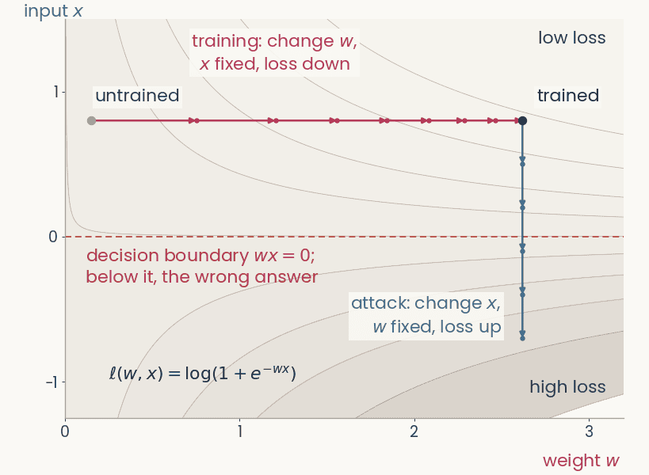
Contour map of the logistic loss of a one-weight network over the weight w (horizontal) and the input x (vertical). A magenta training path moves right along w at fixed x, from w = 0.15 to w = 2.62, loss 0.64 to 0.12. From the trained point a blue attack path moves down along x at fixed w, crosses the dashed decision boundary at x = 0, and the loss rises to 1.98
Open full-size figure
Computed · the smallest network: one weight, one input, logistic loss
- A network computes . Its loss depends on both. The network in the figure has a single weight,
- In training, we keep the image fixed and change the weights to lower the loss,
- In an attack, we keep the weights fixed and change the pixels to raise the loss. Backpropagation down to the pixels gives one slope per pixel, . A few small steps push the image across the decision boundary
- ResNet-50: 25.6 million weights, 150,528 pixel values (224 × 224 × 3)
Slide 4
Backpropagation, four uses
| use | gradient of | variable | then | steps |
|---|---|---|---|---|
| training | loss | weights | step down | many |
| adversarial example | loss | pixels | step up | one, tiny |
| attribution map | logit | pixels | the gradient is the map | none |
| feature visualization | one channel's activation | pixels | step up | many, from noise |
- A step is one gradient update: against the gradient to lower the quantity, along it to raise it
- The logit is the score of class before the softmax. In the last three rows, the trained weights never change
Slide 5
Training: the gradient flows back to the weights
![A schematic network, left to right: the petunia photograph, image x; conv blocks with weights theta; feature maps A of layer l; more conv; the last feature maps A of layer L, channels k; class scores z; and at the right, the objective box. Gray arrows carry the forward pass; a red arrow carries the gradient backward. Here the objective is the loss of z and the label y; the red arrow branches up into every conv block; the image is fixed and the weights change, theta gets theta minus eta times the gradient of the loss](../images/L13/gradflow_1_training.png)
Schematic, one frame of six with an identical layout. Left to right along the top: the petunia photograph labeled image x, two conv blocks marked with the weights theta in magenta, a small stack of three feature maps labeled A superscript l, a third conv block, a stack of four feature maps labeled A superscript L, channels c, a column of five class scores labeled z, and at the right a red-outlined box labeled objective at the top. Gray arrows carry the forward pass left to right. A red gradient arrow drops from the objective box and runs right to left along the bottom of the network. Training. Objective: loss l of z and y. Tags: image x fixed (closed lock); weights theta changes (open lock, bold). The red arrow runs back to the first conv block and sends an upward branch into each of the three conv blocks. Below the conv blocks: theta gets theta minus eta times the gradient of the loss with respect to theta; change the weights.
Open full-size figure- Each conv block outputs a stack of feature maps. Only two are drawn, and the last, . In the next slides the network stays the same. We change what sits at the top, and where the backward pass stops
Slide 6
An adversarial example steps the pixels up the loss
![A schematic network, left to right: the petunia photograph, image x; conv blocks with weights theta; feature maps A of layer l; more conv; the last feature maps A of layer L, channels k; class scores z; and at the right, the objective box. Gray arrows carry the forward pass; a red arrow carries the gradient backward. Here the objective is the loss, to go up; the weights are fixed and the red arrow runs all the way back to the pixels; below, the petunia unchanged to the eye, and x gets x plus epsilon times the sign of the gradient of the loss with respect to x](../images/L13/gradflow_2_adversarial.png)
Schematic, one frame of six with an identical layout. Left to right along the top: the petunia photograph labeled image x, two conv blocks marked with the weights theta in magenta, a small stack of three feature maps labeled A superscript l, a third conv block, a stack of four feature maps labeled A superscript L, channels c, a column of five class scores labeled z, and at the right a red-outlined box labeled objective at the top. Gray arrows carry the forward pass left to right. A red gradient arrow drops from the objective box and runs right to left along the bottom of the network. Adversarial example. Objective: loss l of z and y, go UP. Tags: image x changes; weights theta fixed. The red arrow runs all the way back to the photograph and ends at a stop bar under it. Result below the photograph: the same petunia, which looks unchanged, beside x gets x plus epsilon times the sign of the gradient of the loss with respect to x; change the image a little: one step.
Open full-size figure- We take one small step up the loss. No pixel changes enough to see, yet the answer changes
- Why only the sign? Each pixel may change by at most . The loss rises most if every pixel uses the full
Slide 7
Adversarial examples

Goodfellow et al. 2015, Figure 1: a photograph of a panda, classified panda with 57.7 percent confidence, plus 0.007 times a colorful noise pattern, the sign of the gradient of the loss with respect to the pixels, equals an image that looks identical to the panda but is classified gibbon with 99.3 percent confidence.
Open full-size figure- After one small step along the gradient with respect to the pixels, the network calls the panda a gibbon
- A norm measures the size of the change. Here it is the largest change of any pixel. In the assignment it is the length of the whole change. The smaller the change that flips the answer, the less robust the network
Slide 8
Adversarial training: learn from the worst case
- The inner max is an attack. It finds the change, within the budget, that raises the loss the most, the worst case. The outer min is ordinary training
- At every training step, we attack the current network and train it on the attacked images. Training on random noise of the same size, or on attacks computed once at the start, gives much less robustness
- It costs a few points of ImageNet accuracy. The assignment's robust ResNet-50 was trained this way, with an budget of
Slide 9
Try it: attack the flower network
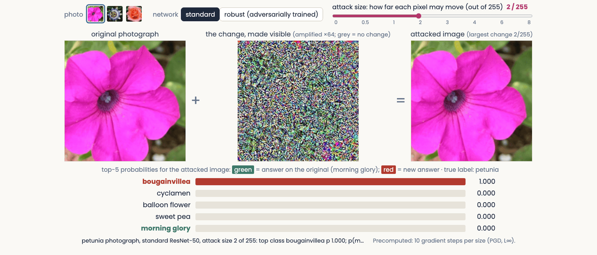
The adversarial attack explorer at an attack size of 2 out of 255 on the standard network: the petunia photograph, plus a colorful noise pattern amplified 64 times, equals an attacked image that looks the same as the original; the bars below read bougainvillea 1.000, the network's answer on the original, morning glory, having fallen to zero
Open full-size figure
- Try the standard network at 0.5/255, then the robust one at 2/255. Half a gray level fools the standard network. The robust one still gets it right
Slide 10
Attribution maps show which pixels a decision used
Occlusion, saliency and two fixes for it, Grad-CAM, and how to test a map
Slide 11
Occlusion: cover a region and watch the score

Zeiler and Fergus (2014), Figure 7, three pairs side by side. Each pair is a test photograph with a gray square drawn on it, and to its right a map of the probability of the correct class as the square is moved over every position: red is high, blue is low. Pair 1, true label Pomeranian: a fluffy dog holding a green toy; the map is red everywhere except a blue patch where the square covers the dog's face. Pair 2, true label car wheel: the side of a racing car; the map is blue over the wheel on the right. Pair 3, true label Afghan hound: a man and a woman with a long-haired dog; the map is blue over the dog and red over the man's face. The point: covering the object, not its surroundings, lowers the network's probability.
Open full-size figure- Occlusion needs no gradient. We cover part of the image with a gray square, run the network again, and repeat at every position. Each point of the occlusion map is the probability of the correct class with the square centered there. Dark regions are the ones the answer depends on
- A gray square is an unnatural input, so the square itself can lower the score. Try other fills (blurred, noise, the region filled in from its surroundings) and other sizes. A region that really matters should matter for all of them
Slide 12
Try it: cover a region, watch five scores
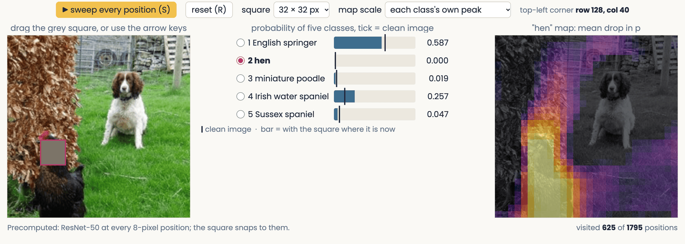
A still of the occlusion demo: an ImageNet photograph of an English springer spaniel on a lawn with a hen, a 32-pixel gray square over the hen's head; beside it five bars giving ResNet-50's probability for English springer, hen and three other dog classes, each with a tick at its value on the clean photograph; and the swept occlusion map for the class hen, bright over the hen and dark over the dog.
Open full-size figure
- Drag the square onto the dog, then onto the hen, and watch the two scores swap. Unlike the published map, this map shows the drop in probability, so bright means the region matters
Slide 13
Saliency: the gradient at the pixels
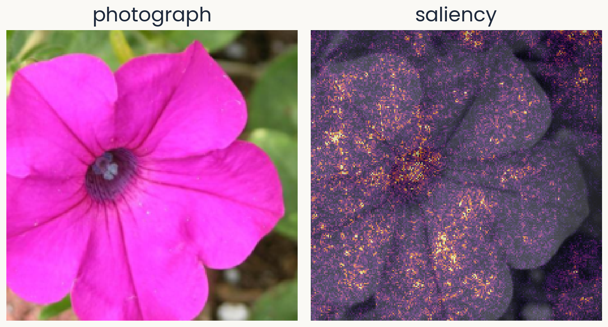
Two panels of equal size. Left: a Flowers102 test photograph of a magenta petunia, which the course's flower network (ResNet-50 with a linear readout) calls morning glory with probability 0.63. Right: the saliency map for morning glory over a gray copy of the photograph: bright speckle over the whole flower, densest at the dark center and along petal edges.
Open full-size figure
Computed · a petunia the network calls morning glory (p = 0.63)
- Which pixels, if changed a little, would change the logit the most?
- : the logit (score before the softmax) of the predicted class; : the image
- : the saliency map, one value per pixel
- We use the predicted class, to explain what the network did. When the network is wrong, compare with the map for the correct class
Slide 14
Saliency: backpropagate the logit to the pixels
![A schematic network, left to right: the petunia photograph, image x; conv blocks with weights theta; feature maps A of layer l; more conv; the last feature maps A of layer L, channels k; class scores z; and at the right, the objective box. Gray arrows carry the forward pass; a red arrow carries the gradient backward. Here the objective is the class score z_c, one cell of z filled red; weights fixed; the red arrow runs back to the pixels; below, the petunia's saliency map, the absolute value of the partial derivative of z_c with respect to x, read the slope at each pixel, no step](../images/L13/gradflow_3_saliency.png)
Schematic, one frame of six with an identical layout. Left to right along the top: the petunia photograph labeled image x, two conv blocks marked with the weights theta in magenta, a small stack of three feature maps labeled A superscript l, a third conv block, a stack of four feature maps labeled A superscript L, channels c, a column of five class scores labeled z, and at the right a red-outlined box labeled objective at the top. Gray arrows carry the forward pass left to right. A red gradient arrow drops from the objective box and runs right to left along the bottom of the network. Saliency map. Objective: class score z_c, with one class-score cell filled red and labeled z_c. Tags: image x fixed; weights theta fixed. The red arrow runs back to the pixels. Result below the photograph: the saliency map of the petunia, speckled bright dots over a darkened flower, beside the absolute value of the partial derivative of z_c with respect to x; read the slope at each pixel, no step.
Open full-size figure- We put at the top and backpropagate to the pixels. The slope at each pixel is the saliency map
- The next slide works through the chain rule
Slide 15
The chain rule reaches the pixels in one more link
- We use the backpropagation recipe with at the top instead of the loss. A unit's error is now , computed from the units above, as before
- Each unit of the first hidden layer takes the pixels as its inputs. There, training and saliency use the errors differently:
- Treat each pixel as a unit of the input layer. The hidden-unit formula, applied one more time, gives the map
- On the way down, the errors go through ReLUs whose slope is 0 or 1. The next slide shows why this makes the map noisy
Slide 16
Invisible noise changes the saliency map
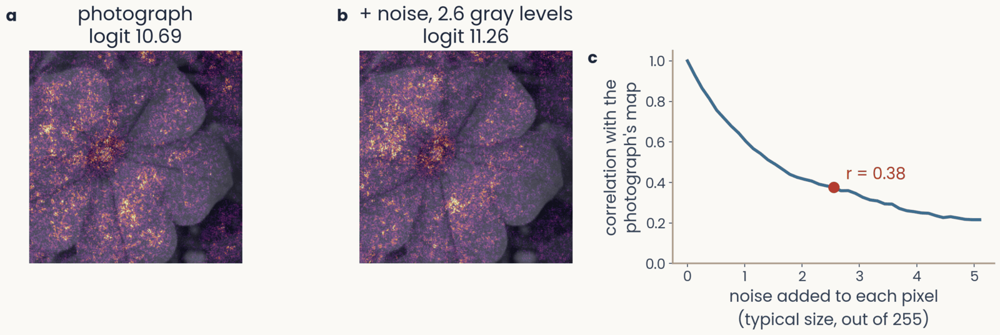
Three panels. First, the petunia's saliency map for morning glory, logit 10.69. Second, the saliency map after adding a fixed noise pattern of about 2.6 gray levels to every pixel, logit 11.26: the speckle has rearranged, with bright clusters in new places. Third, the correlation between the map of the noisy image and the photograph's map, against the size of the noise from 0 to 5 gray levels: it falls from 1 to 0.38 at 2.6 gray levels, marked, and to about 0.2 at 5
Open full-size figure
- Add noise of about 2.6 gray levels (out of 255) to every pixel. You cannot see it, and the logit barely changes (10.69 → 11.26). Yet the map changes a lot. Its correlation with the original map drops to 0.38
- Why? Each ReLU has a slope of 0 below threshold and 1 above. A tiny change in the pixel values turns some units on or off, and the gradient jumps
Slide 17
SmoothGrad: average the maps of many noisy copies
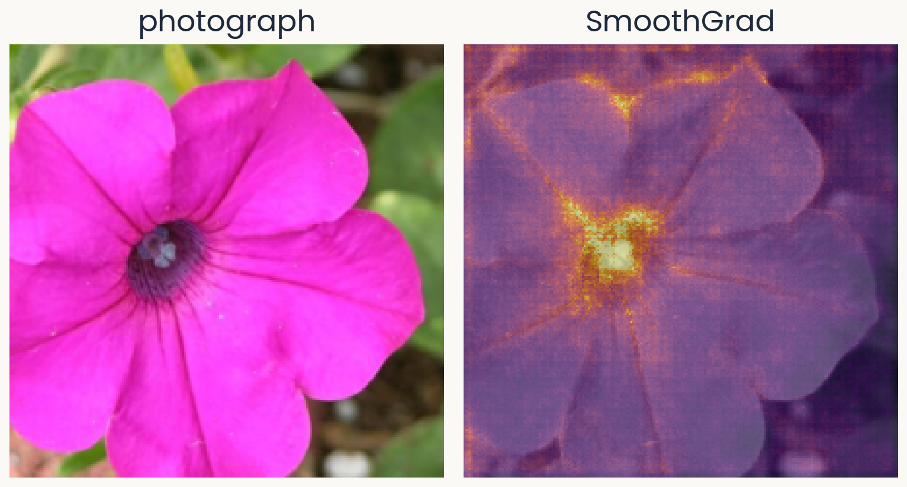
Two panels of equal size. Left: the same petunia photograph. Right: the SmoothGrad map for morning glory, the average of 50 saliency maps of noisy copies: smoother than the plain saliency map, with the dark center and the petal edges standing out and less speckle on the background.
Open full-size figure
Computed · 50 noisy copies · same network and photograph
- SmoothGrad makes 50 noisy copies of the photograph, each with its own noise , and averages their saliency maps
- The jumps differ from one copy to the next, so they average out. What remains is the part of the map that all the copies share
- You will compute saliency and SmoothGrad maps in the assignment
Slide 18
Saturation: the slope is flat where the detail mattered
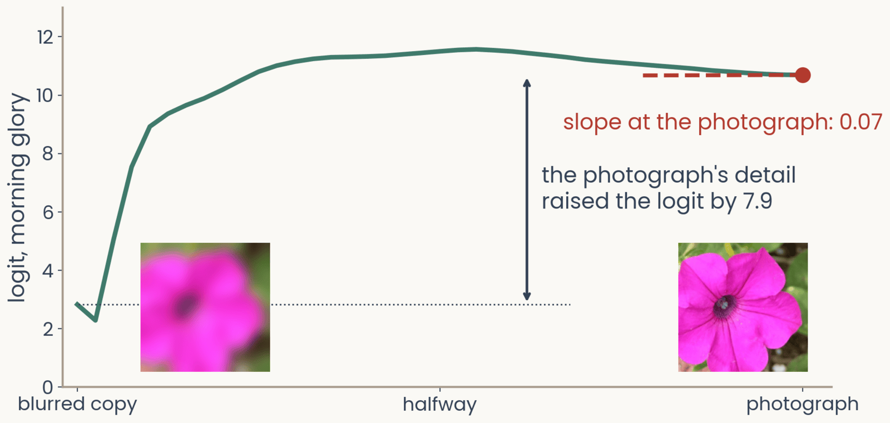
The logit for morning glory along a path of images from a blurred copy of the petunia, left, to the photograph, right, with both images shown at the bottom. The logit rises steeply from 2.8 over the first third of the path to a peak near 11.5 at the middle, then declines slightly to 10.69 at the photograph, where a dashed tangent is flat: slope at the photograph 0.07. A double arrow marks the rise of 7.9 between the blurred copy and the photograph
Open full-size figure
Computed · same network and photograph · blurred copy: Gaussian blur, sd 10 pixels
- We go step by step from a blurred copy of the photograph to the photograph itself. The logit rises from 2.8 to about 11 in the first third of the way, then stays about flat
- At the photograph, the slope is only 0.07. The gradient says the detail does not matter, yet adding it raised the logit by 7.9
- This is saturation. Once the network has enough evidence, more evidence adds nothing, just as a neuron firing at its maximum rate cannot respond more to a stronger stimulus
Slide 19
Integrated gradients: add up the slopes along the path
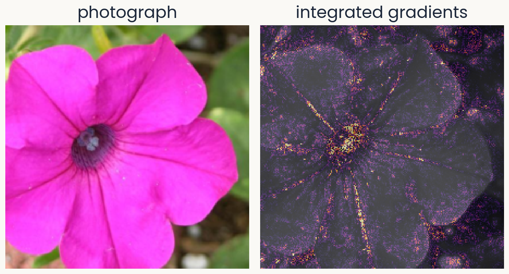
Two panels of equal size. Left: the petunia photograph. Right: the integrated-gradients map for morning glory, computed from a blurred-copy baseline in 32 steps: credit concentrated on the dark center and along the petal veins and edges, with less speckle than the plain saliency map.
Open full-size figure
Computed · baseline: a blurred copy · 32 steps
- Integrated gradients computes the gradient at images along the path from a baseline to the photograph. It multiplies each pixel's average slope by how far that pixel moved, . Slope times distance is that pixel's share of the rise
- Now the steep part of the path counts. The credits of all pixels add up to the whole rise of the logit, 7.9 here
- You have to choose the baseline. We use a blurred copy here, and the assignment's bonus uses a black image
Slide 20
Grad-CAM: stop at the last feature maps
![A schematic network, left to right: the petunia photograph, image x; conv blocks with weights theta; feature maps A of layer l; more conv; the last feature maps A of layer L, channels k; class scores z; and at the right, the objective box. Gray arrows carry the forward pass; a red arrow carries the gradient backward. Here the objective is the class score z_c; the red arrow stops at the last feature maps A of layer L, where each channel k carries a weight alpha k, for example 0.8, 0.1, minus 0.3, 0.5; below, alpha k is the average over positions of the partial derivative of the class score z_c with respect to channel k, and the map for class c is ReLU of the sum over k of alpha k times channel k, drawn as a coarse heat map over the petunia, brightest at its center](../images/L13/gradflow_4_gradcam.png)
Schematic, one frame of six with an identical layout. Left to right along the top: the petunia photograph labeled image x, two conv blocks marked with the weights theta in magenta, a small stack of three feature maps labeled A superscript l, a third conv block, a stack of four feature maps labeled A superscript L, channels c, a column of five class scores labeled z, and at the right a red-outlined box labeled objective at the top. Gray arrows carry the forward pass left to right. A red gradient arrow drops from the objective box and runs right to left along the bottom of the network. Grad-CAM. Objective: class score z_c, one class-score cell red. Tags: image and weights fixed. The red arrow stops at the last feature maps A superscript L, marked by a stop bar under that stack; each of the four channels carries a red number, its weight alpha_c: 0.8, 0.1, minus 0.3, 0.5. Below: alpha_c equals the average over positions of the partial derivative of z_c with respect to channel c of A superscript L; map equals ReLU of the sum over c of alpha_c times that channel. Beside the formulas, a coarse 7 by 7 heat map over the petunia, brightest at the flower's center.
Open full-size figure- Each channel of the last feature maps gets a weight : how much the logit rises when that channel is stronger. The weighted sum of the channels is the map. It is coarse, 7 × 7 for ResNet-50, but it lands on the object
Slide 21
Remove a region and run the network again
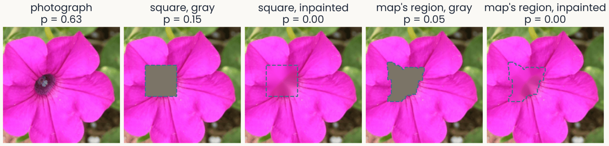
Five versions of the petunia photograph, each with the probability of morning glory: the photograph, 0.63; a gray square over the dark center, 0.15; the same square inpainted, filled with smooth pink continued from its border, 0.00; the brightest region of the SmoothGrad map, an irregular patch over the center and the petal bases, filled gray, 0.05; the same region inpainted, 0.00. Each removed region is outlined with a dashed line
Open full-size figure
- A map claims that some pixels drove the score. We can test that claim as occlusion does. Remove those pixels and run the network again
- The region can be a square, as in occlusion, or any shape, such as the region a map points to
- The fill can be gray, as in occlusion, or inpainted. Inpainting fills each pixel by smoothly continuing the colors at the region's border, so no gray shape is added
Slide 22
Test the map against the same shape elsewhere
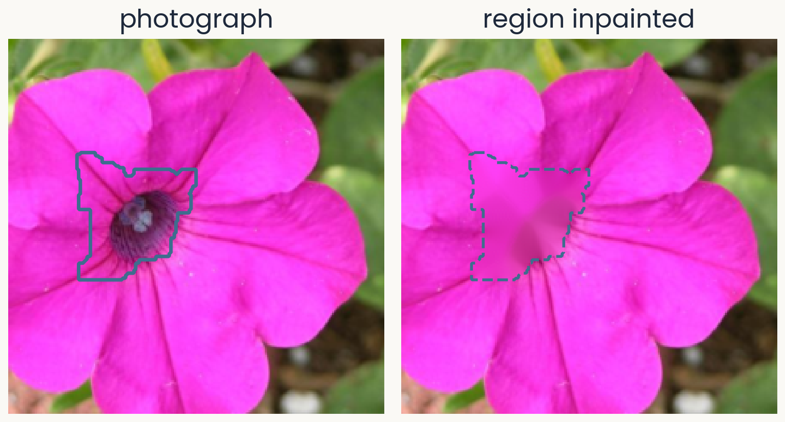
Two panels of equal size. Left: the petunia photograph with a solid outline around the brightest region of its SmoothGrad map for morning glory: the dark center and the bases of the petals above it, about 7% of the image. Right: the same photograph after that region is inpainted, filled with colors continued smoothly from its border, so the dark center becomes a smooth pink patch outlined with a dashed line.
Open full-size figure
Computed · region: the brightest 6% of the SmoothGrad map, grown to 7%
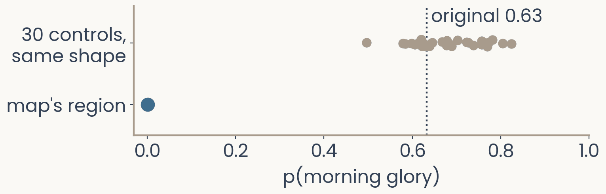
Dot plot. Horizontal axis: probability of morning glory from 0 to 1; a dotted vertical line marks the original 0.63. Top row: 30 gray dots, one per control in which a region of the same shape was inpainted at a random place that misses the map's region, spread from 0.50 to 0.82. Bottom row: one blue dot at 0.00 for the inpainted map region.
Open full-size figure
- If the map is right, removing its region should lower the score more than removing the same shape anywhere else
- Inpainting the map's region drops the probability from 0.63 to 0.00. As a control, we inpaint the same shape at 30 places that miss the region. The probability stays between 0.50 and 0.82. Only the region the map picked matters
- This test works for any map. In the assignment, you will measure the share of a map's top pixels that fall on the flower
Slide 23
Test every map: delete pixels in its order
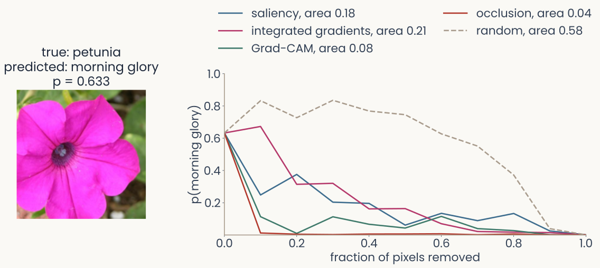
Left, the petunia photograph labelled true petunia, predicted morning glory, p = 0.633. Right, deletion curves: the probability of morning glory against the fraction of pixels replaced by a blurred copy, pixels removed in the order each map ranks them, 10 steps. Occlusion falls fastest, area 0.04, then Grad-CAM 0.08, saliency 0.18 and integrated gradients 0.21; the dashed random map stays high for most of the way, area 0.58
Open full-size figure
- Deletion removes pixels in the order the map ranks them, 10% at a time. The area under the curve scores the map. With a good map, the probability falls fast
- Random map 0.58, occlusion 0.04, Grad-CAM 0.08, saliency 0.18, integrated gradients 0.21
Slide 24
What does a single unit respond to?
Find the image that drives one unit hardest
Slide 25
Feature visualization: one channel at the top
![A schematic network, left to right: the petunia photograph, image x; conv blocks with weights theta; feature maps A of layer l; more conv; the last feature maps A of layer L, channels k; class scores z; and at the right, the objective box. Gray arrows carry the forward pass; a red arrow carries the gradient backward. Here the objective box is wired to the feature maps A of layer l, and everything after them is grayed out; one channel k is outlined red; objective: one channel's mean activation, one over H_l W_l times the sum over i, j of A l, i, j, k; weights fixed; the red arrow runs back to the pixels; below, a real feature visualization of a ResNet-50 channel, and x gets x plus eta times the gradient, many steps, start from noise](../images/L13/gradflow_5_featviz.png)
Schematic, one frame of six with an identical layout. Left to right along the top: the petunia photograph labeled image x, two conv blocks marked with the weights theta in magenta, a small stack of three feature maps labeled A superscript l, a third conv block, a stack of four feature maps labeled A superscript L, channels c, a column of five class scores labeled z, and at the right a red-outlined box labeled objective at the top. Gray arrows carry the forward pass left to right. A red gradient arrow drops from the objective box and runs right to left along the bottom of the network. Feature visualization. The objective now attaches to the intermediate stack A superscript l: a dark line rises from that stack, runs over the top of the canvas and drops into the objective box, and everything after A superscript l (third conv block, A superscript L, z) is grayed out. The front channel of A superscript l is outlined red and labeled c. Objective: one channel's mean activation, 1 over H_l W_l times the sum over i, j of A superscript l at i, j, c. Tags: image x changes; weights fixed. The red arrow runs back to the pixels. Result below the photograph: a feature-visualization image from a ResNet-50 channel, a colorful repeating texture, beside x gets x plus eta times the gradient with respect to x; many steps, start from noise.
Open full-size figure- At the top, we now put one channel's mean activation. We start from noise and take many steps up its gradient. The result is the image that drives the channel most
Slide 26
Feature visualization: optimize the image
We keep the weights fixed and change the image until one channel of layer , averaged over its positions, responds as strongly as possible:
- arg max means the image that makes the expression largest. Training walked downhill on the loss. Here, you walk uphill on the channel's mean activation
- Without the penalty, the result is high-frequency noise that drives the channel but means nothing to you, much like the adversarial image from the start of today. The penalty keeps the image natural-looking
- This asks what channel responds to across all images, instead of explaining one decision. The image found is the channel's maximally exciting image (MEI)
Slide 27
AlexNet: oriented edges, then textures, then object parts
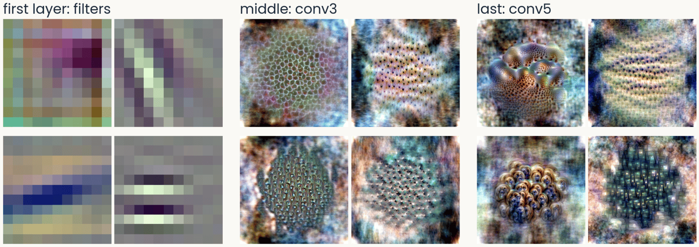
AlexNet feature visualizations in three groups of four. First layer, the filters: oriented stripes and color blobs. Middle layer, conv3: repeating textures of dots and cells. Last layer, conv5: object-like parts, a coral-like surface with holes, rows of eye-like spots, shells
Open full-size figure
- The first layer has oriented edges and color blobs, like V1 simple cells. The middle layers respond to repeating textures, and the last layers to object-like parts
Slide 28
ResNet-50: edges, textures, then sharper parts
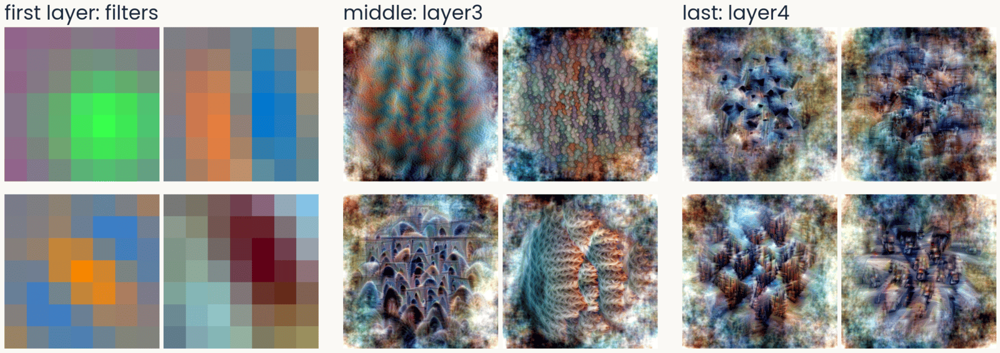
ResNet-50 feature visualizations in three groups of four. First layer, the 7 by 7 filters: color-opponent blobs and an oriented blue-orange edge. Middle, layer3: textures and arch-like repeated shapes. Last, layer4: screws and bolts, building facades, traffic seen from above
Open full-size figure
- In the last block, the parts are recognizable: screws, facades, traffic. Nobody told the network about any of them. This is the ResNet-50 you use in the assignment
Slide 29
ViT-B/16: no oriented filters in the first layer
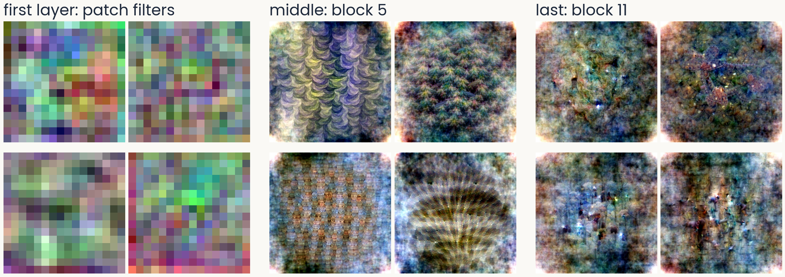
ViT-B/16 feature visualizations in three groups of four. First layer, the 16 by 16 patch filters: noisy, colored, with no oriented stripes. Middle, block 5: repeating scale and wave textures. Last, block 11: diffuse, speckled patterns with small dark marks, no clear object parts
Open full-size figure
- A vision transformer cuts the image into 16 × 16 patches. Unlike a convolutional network, its first-layer filters show no preferred orientation
Slide 30
DINOv2, trained without labels: textures and parts too
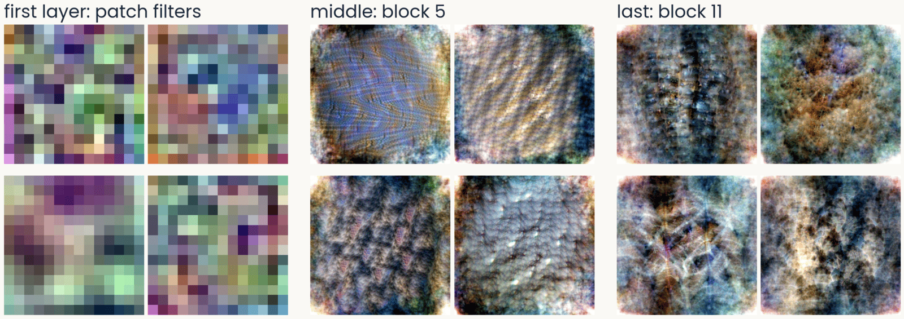
DINOv2 ViT-B/14 feature visualizations in three groups of four. First layer, the 14 by 14 patch filters: noisy, no oriented stripes. Middle, block 5: woven, ridged and pebbled textures. Last, block 11: dense surfaces with eye-like spots, fur-like and ridged textures
Open full-size figure
- DINOv2 is self-supervised. Without labels, it learns to give matching outputs for two views of the same image. Its first layer has patch filters like ViT's, and its top layers still show textures and parts
Slide 31
ResNet-50's last block: MEIs and top photographs
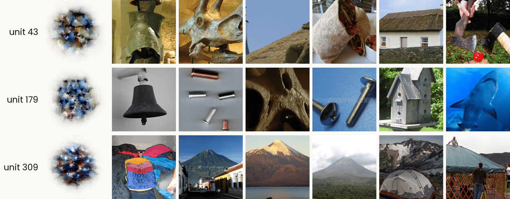
Three ResNet-50 layer4 units, one per row. In each row, the unit's MACO feature visualization on the left, labeled with its number, then the six ImageNet validation images that drive it most strongly. Unit 43: a bronze helmet, a triceratops skull, a thatched roof, a burrito, a thatched cottage, and two axes on grass. Unit 179: a bell, small metal screws, a perforated bone, a bolt and a screw, a birdhouse, and a shark. Unit 309: piled sleeping bags, a volcano above a town, a volcano over a lake, a volcano in cloud, a tent below snowy peaks, and a yurt. The point: unit 309 responds to conical shapes, while unit 179 has no single label.
Open full-size figure
- Each row is one unit. The MEI is synthesized and shows only what the unit prefers, but it is hard to read. The top photographs are the six ImageNet photographs that drive the unit hardest, real but cluttered. Look at both together
Slide 32
A shortcut: "tench" includes the fingers holding it
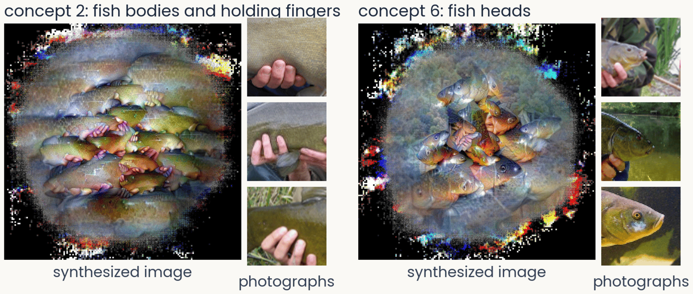
Two concepts of ResNet-50 for the class tench, from ObjectLENS. Left, concept 2: a synthesized image of fish bodies with pink fingers wrapped around them, beside three ImageNet crops that drive it, each a hand gripping a fish. Right, concept 6: a synthesized image of fish heads, beside three crops of tench heads and faces
Open full-size figure
- ObjectLENS, a tool from our lab, splits what the last block does for one class into a few concepts. It visualizes each one and shows the photographs that drive it
- Most ImageNet tench are trophy shots, held up by an angler. The network learned the hands as part of the fish, a shortcut: a cue that predicts the label without being the object
- Try at home: all 1,000 classes at serre-lab.github.io/Lens
Slide 33
A Spider-Man neuron, after the Halle Berry neuron
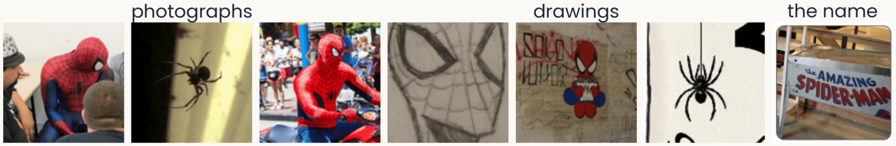
Seven image tiles that drive one unit of CLIP: photographs of two people in Spider-Man costumes and of a real spider in its web; a pencil drawing of the mask, a Spider-Man sticker and a drawing of a spider; and a sign reading The Amazing Spider-Man
Open full-size figure
- Quiroga et al. (2005) recorded a neuron in a patient's medial temporal lobe that fired for photographs of Halle Berry, a drawing of her, and her written name. It responds to the person, whatever the picture
- CLIP learns from 400 million photographs with their captions. One of its units responds to Spider-Man in photographs, drawings and the written name, and to spiders. It was found with today's tools, feature visualization and top-activating images
- Because CLIP reads text, text can fool it. An apple with a note that says "iPod" is classified as an iPod, a typographic attack
Slide 34
A Golden Gate Bridge feature in a language model
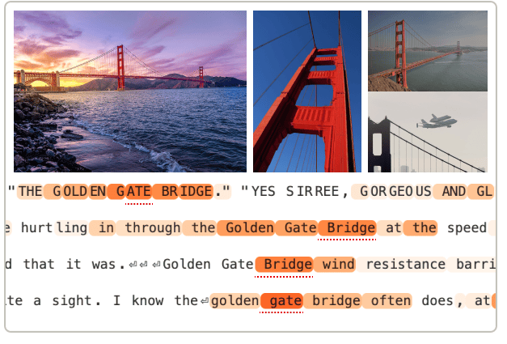
Example inputs that activate the Golden Gate Bridge feature of Claude 3 Sonnet, from Templeton et al. (2024): three photographs of the bridge, at sunset, from below and with the Space Shuttle flying over it, and four lines of text in which the words Golden Gate Bridge are highlighted
Open full-size figure
- Templeton et al. (2024) found millions of features in the language model Claude 3 Sonnet. Each feature is a direction in the model's activity. One responds to the Golden Gate Bridge in photographs, in English and in other languages
- If you turn that feature up, the model brings the bridge into every answer. In any network, we can ask what drives a unit and what happens when we drive it
- Try at home: browse the features of open language models at neuronpedia.org
Slide 35
Is a network a good model of the ventral stream?
Score a network's blocks against V1, V4 and IT recordings, with tools you already have
Slide 36
Scoring a network against the brain: tools you know
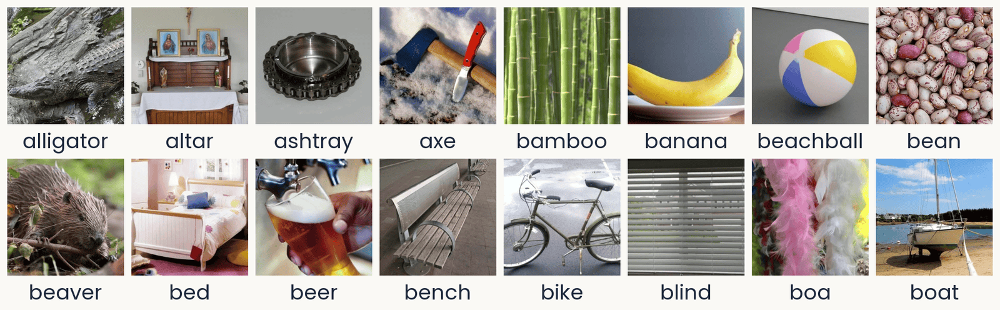
Sixteen photographs from the THINGS database in two rows of eight, each with its concept name below: alligator, altar, ashtray, axe, bamboo, banana, beachball, bean; then beaver, bed, beer, bench, bike, blind, boa, boat. They are ordinary photographs of single objects or materials, some on plain backgrounds (an ashtray and a beach ball on gray) and some in natural settings (an alligator on rocks, a sailboat on a beach at low tide, pink and white feather boas). These are 16 of the 100 TVSD test photographs (Papale et al., 2025): the images each shown 30 times, on which the encoding models are scored.
Open full-size figure
TVSD (Papale et al. 2025): 16 of the 100 test photographs
- A readout is a ridge regression from a block's units to one site's responses, fit on training photographs and scored on new ones
- The noise ceiling divides each site's score by how well the site predicts itself across repeats, so 1 is the best possible
- A block's linear predictivity is the median score over an area's sites. RSA compares dissimilarity matrices, with no weights to fit
- Data, as in the assignment: TVSD, about 22,000 THINGS photographs, sites in V1, V4 and IT of two monkeys
Slide 37
Later blocks predict later areas

Computed: ImageNet-trained ResNet-50 on the TVSD test photographs (Papale et al., 2025). Line plot. Horizontal axis: the 16 blocks of ResNet-50 in order, grouped as layer1 (blocks 0 to 2), layer2 (0 to 3), layer3 (0 to 5) and layer4 (0 to 2). Vertical axis: median noise-corrected correlation over electrodes, 0 to 0.8. Color gives the area, V1 blue, V4 green, IT magenta; line style gives the monkey, F solid, N dashed; shaded bands are 95% bootstrap intervals; a dot marks each curve's peak. V1 starts highest, near 0.64, and stays nearly flat until layer4. IT starts lowest, near 0.5, and rises through layer2 and layer3. V4 peaks at layer3 block 3 in both monkeys, about 0.68 in F and 0.71 in N. IT peaks later and higher: 0.76 at layer4 block 0 in F, 0.81 at layer3 block 4 in N. Every curve drops in the last blocks of layer4. Later areas are best predicted by deeper blocks, V4 before IT.
Open full-size figure- We fit a readout from every block of an ImageNet ResNet-50 to every site. The assignment's last part does this for the last block only. V4 peaks at layer3, and IT keeps rising after V4 has levelled off. All areas fall in the last blocks
Slide 38
Better AI has not meant better models of the brain
Past human-level accuracy, better ImageNet networks are not better models of IT, and the recordings disagree about what is
Slide 39
Past human-level accuracy, the trend reverses
![Scatter of neural alignment, 0.2 to 1.0, against ImageNet multi-label accuracy, 0.5 to 1.0, for several hundred models colored by family: CNNs trained on ImageNet-1K in red, adversarially trained CNNs in yellow, convolutional vision transformers in green, vision transformers in blue, with internet-scale and vision-and-language variants in lighter shades; a gray band marks human accuracy near 0.93 to 0.97. Two dashed lines: alignment rises with accuracy up to about 0.9, then falls; purple stars mark recent models SigLIP-2, DINOv3 ViT-L and ViT-H, I-JEPA, vJEPA2 and EVA-02, the most accurate of which sit lowest](../images/L11/tics2026_neural_alignment.png)
From Linsley, Feng and Serre (2026). Scatter plot of neural alignment, how well a network's features predict monkey IT responses (vertical, 0.2 to 1.0), against ImageNet multi-label accuracy (horizontal, about 0.45 to 1.0), several hundred networks drawn as colored squares. Legend: CNNs trained on ImageNet-1K red, on internet-scale images pink, adversarially trained yellow; convolutional vision transformers (ConvViT) on ImageNet-1K dark green, internet-scale light green; vision transformers (ViT) on ImageNet-1K blue, internet-scale light blue, internet-scale vision and language gray. A gray vertical band labeled Human accuracy covers about 0.92 to 0.97. Two dashed lines meet near the band: one rising from about 0.5 at the left to about 0.7, one falling from there to about 0.6 at accuracy 1.0. Yellow adversarial CNNs sit at the left, accuracy 0.48 to 0.7; most red and blue networks cluster at 0.75 to 0.97 accuracy and 0.45 to 0.7 alignment. Purple stars mark recent models: SigLIP-2 and DINOv3 ViT-L near 0.65, DINOv3 ViT-H near 0.56, I-JEPA near 0.49, EVA-02 near 0.48 at the highest accuracy, and vJEPA2 lowest, near 0.29. Alignment rises with accuracy up to about human accuracy, then falls.
Open full-size figure- Each point is a network, scored on how well its features predict monkey IT. Up to about human accuracy, the fit rises. Beyond that, the most accurate networks are worse models of IT
Slide 40
Four datasets, one cohort: the picture in 2026
![Four scatter plots of alignment score against ImageNet multilabel accuracy for 363 classifiers, CNNs as blue dots, transformers orange, self-supervised and image-text models as open circles, adversarially trained models as triangles, each with a dashed noise ceiling. Arcaro IT: rank correlation plus 0.37 overall, minus 0.38 among the 84 models above 92.7 percent. Triple-N IT: minus 0.08 overall, plus 0.20 at the top. TVSD IT: plus 0.73 overall, plus 0.65 at the top. Human feature use: minus 0.77 overall, minus 0.37 at the top](../images/L13/serre2026_annrev_fig4_ad.png)
Four scatter plots from Serre 2026, Figure 4, of alignment score against ImageNet multilabel accuracy, 50 to 100 percent, for 363 image classifiers: CNNs as blue dots, transformers as orange dots, self-supervised and image-text models as open circles, adversarially trained models as triangles; a dashed line marks each dataset's ceiling. Panel a, Arcaro IT: rank correlation plus 0.37 over all models, minus 0.38 among the 84 above 92.7 percent. Panel b, Triple-N IT: minus 0.08 and plus 0.20. Panel c, TVSD IT: plus 0.73 and plus 0.65. Panel d, human feature use: minus 0.77 and minus 0.37; two harmonized models, VGG-16 and ViT-B/16, sit well above the cloud.
Open full-size figureReproduced from Serre (2026), Fig. 4 (draft); Triple-N and TVSD scores computed for the review
- 363 networks, four targets. For IT, we use each network's best-fitting layer. Human feature use is the agreement with the regions people paint as important in ClickMe, a web game
- Arcaro IT and ClickMe turn down past about 93% accuracy. TVSD still rises (rank correlation ρ = +0.73). Triple-N, a newer IT dataset, is flat (ρ = −0.08)
- The answer depends on which recordings you use. To discuss: if higher accuracy no longer gives a better fit to the brain, what would?
Slide 41
Final projects: ask the models
- Everything today is an experiment on a model: a recording, a readout, a designed image. The data are on hand: TVSD, THINGS behavior, ClickMe maps, the three ResNet-50s you already have, the Oscar GPUs
- One experiment toward a neural law: a quantitative relation between what a model was given (images, objective, architecture, budget) and what it predicts (sites, behavior)
- Seeds: hold the architecture constant and vary the objective (labels, DINO, image–text): which predicts TVSD or Triple-N better, and at which block? · Take one published comparison and do it better: matched layers, noise ceilings, the sites a model misses · Make two equally scoring models disagree: synthesized images, MEIs, controversial stimuli, then test which is right · Train with a human signal (ClickMe) and ask whether IT prediction follows
- A careful redo counts. So does a negative result with the right controls
Slide 42
Recap
- Backpropagation has four uses. Training changes the weights. With the weights fixed, the gradient with respect to the pixels can change the answer (adversarial example), explain it (attribution map), or synthesize the image a unit prefers (feature visualization, MEI)
- An attribution map is a hypothesis. Test it by removing its region and comparing with the same shape elsewhere, or by deleting pixels in its order
- In convolutional networks, feature visualization shows edges, then textures, then parts. A transformer's first layer has no oriented filters. These tools also find shortcuts (tench and fingers), units that respond to one concept in photographs, drawings and text (Spider-Man) and features in language models
- Linear predictivity fits a ridge readout from a network block to each recorded site, scored on held-out images relative to the site's reliability. Deeper blocks predict later areas, V4 before IT
- Better AI has not meant better models of the brain. Past about human accuracy, more accurate networks do not reliably predict IT better, and the datasets disagree
Slide 43
Further reading for the research trail
Optional: a few entries over the semester; any paper from any lecture qualifies.
- Schrimpf et al. Neuron 2020: one benchmark platform for neural and behavioral scores
- Bashivan, Kar & DiCarlo Science 2019: designed images drive V4 sites past natural ones
- Conwell et al. Nat Commun 2024: training images matter more than architecture
- Goh et al. Distill 2021: units of CLIP that fire for one concept in photographs, drawings and text
- Geirhos et al. Nat Mach Intell 2020: shortcut learning, when a network is right for the wrong reason
- Templeton et al. Anthropic 2024: millions of features in a language model, and what driving one does
- Muttenthaler et al. Nature 2025: aligning with human judgments helps generalization
- Fel et al. NeurIPS 2022: networks drift from human strategies as accuracy rises; training on ClickMe maps fixes it
Slide 44
Minute paper
Submit on Canvas → Minute papers → Minute Paper 14 (access code read out in class).
The point of the minute paper is to recall, in your own words, what you just heard. Retrieving it is what strengthens the memory; copying a slide does not. It is not a quiz.
A trend I have noticed: papers that discuss slides I never reached, and papers written while I was still lecturing. Both miss the point. From today, a paper about material not covered in class, or written before the class is over, loses credit.
Write three brief points:
- One idea from today, restated in your own words
- Something you do not yet understand, or a question still open
- Another idea you found interesting, and why it matters for brains, behavior or AI
Slide 45
Going further
Slide 46
Decoding: a readout from brain to stimulus
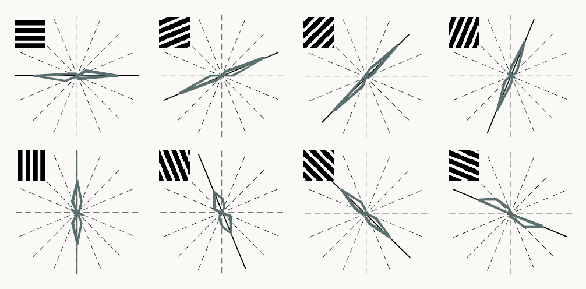
Reproduced from Kamitani and Tong (2005), Figure 2a. Eight polar plots in two rows of four, one per grating orientation shown: horizontal, then rotating in steps of 22.5 degrees through vertical to 157.5 degrees. A small black-and-white grating at each plot's top left shows the orientation. Dashed radial lines mark the eight possible orientations; a black line marks the orientation shown; a gray outline shows how often a readout of the fMRI responses chose each orientation, reaching farther along orientations chosen more often. In every plot the outline is elongated along the black line: the readout mostly chose the orientation shown. A label reads S2, V1/V2, 400 voxels. Orientation can be read out from the pattern across many voxels, although each voxel is only weakly tuned.
Open full-size figure
Reproduced from Kamitani & Tong (2005), Fig. 2a
- Decoding (MVPA): a linear readout run from brain to stimulus. Kamitani & Tong (2005): gratings at 8 orientations. Each voxel (a small cube of cortex) prefers one orientation only slightly; a readout over 400 voxels picks it well above chance
- The information is in the pattern across voxels
Slide 47
Decoding dreams
- Decoding dreams, from Horikawa et al. (2013): readouts trained on fMRI while people viewed photographs were applied to fMRI recorded in sleep, just before each awakening. They predicted the object categories people then reported from their dreams above chance
- A readout can only choose among the labels it was trained on. This tests which visual representations dreaming reuses. It is not mind reading